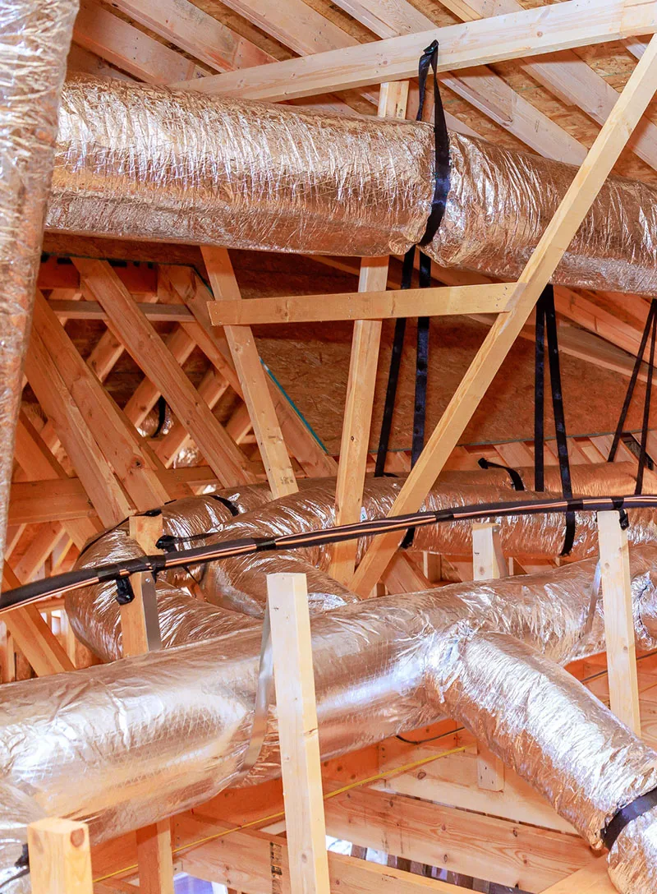

Even, Balanced Temperatures
Consistent temperatures room-to-room with even distribution of heating and cooling.
Get better comfort levels and lower energy bills thanks to Radco’s meticulous approach and smooth duct setup process. Our trained professionals focus on precise duct planning and placement to deliver excellent airflow and maximum efficiency.
No matter if you’re constructing a brand-new residence in West Central Florida or modernizing your current HVAC setup, count on us to provide a personalized solution tailored precisely to your needs. We serve homeowners throughout Hernando County, Pasco County, Citrus County, and Pinellas County with custom ductwork designed for Florida’s demanding climate.

Searching for methods to boost your home’s efficiency, overall comfort, and air freshness? Custom duct installation is the ideal choice. Here are some key advantages you’ll gain:
Consistent temperatures room-to-room with even distribution of heating and cooling.
Cut down on energy loss and waste through reduced leaks and improved system performance. Typical duct systems located in attics or crawl spaces can lose 25% to 40% of the energy used for heating and cooling.
Greater everyday comfort from balanced conditions and elimination of uneven hot or cold areas.
Enjoy a more peaceful living space due to thoughtfully designed and quieter duct systems.
Improve indoor air freshness with correctly sized, tightly sealed ducts that enhance control over air purity.
Opt for custom ductwork to create a superior home atmosphere that goes beyond what you expect. When the time comes for a new system, we frequently evaluate and update ductwork during split system AC installation. Package units also rely heavily on well-designed and properly connected duct systems to deliver their full efficiency — see how we approach package unit installations.
Many homeowners in Spring Hill and the surrounding area live with duct problems for years without realizing the impact. Watch for these common indicators:
Uneven temperatures often point to undersized, leaky, or poorly balanced duct runs.
Leaky or inefficient ducts force your equipment to work harder and longer.
Gaps and leaks pull in unfiltered air from attics and crawl spaces.
Moisture and contaminants can enter through compromised ductwork in Florida’s humid climate.
Physical damage reduces airflow and wastes energy.
These sounds frequently signal leaks, restrictions, or improper sizing.
Call (352) 684-7821 if you notice any of these warning signs. Early attention often prevents more expensive damage and keeps your home comfortable year-round.
Schedule ServiceWest Central Florida homes face unique challenges. High humidity, long cooling seasons, and older housing stock mean duct systems work harder and degrade faster than in milder climates. Leaky or poorly insulated ducts in attics and crawl spaces pull in hot, moisture-laden air that forces your equipment to run longer and can contribute to mold growth inside the system.
A custom duct installation designed specifically for your home layout and Florida conditions addresses these realities from the start. We size every run correctly, seal every joint thoroughly, and insulate to reduce both energy waste and moisture problems.
Our approach includes the following steps, so you know exactly what to expect:
Elevate your home’s comfort through our customized duct installation service. Many of our clients also pair this work with indoor air quality upgrades or ongoing duct cleaning and sanitation to protect their investment for years to come.
When you need new or replacement ductwork, you want a team that shows up prepared and treats your home with respect. That is the standard we hold ourselves to on every project.
Local Technicians
Who live and work in the communities we serve.
Florida-Specific Experience
Designing and installing duct systems for Florida’s unique climate and housing styles.
Clear, Honest Guidance
Clear explanations and honest recommendations before any work begins.
Fully Licensed & Insured
HVAC License No. CAC058388 and fully insured.
Convenient Local Scheduling
Responsive service across Hernando, Pasco, Citrus, and Pinellas Counties.
A well-designed duct system is essential for comfort and efficiency, but it works best as part of a complete home climate solution. Explore these related services:
We provide custom duct installation throughout Spring Hill FL, Brooksville, Hernando County, Citrus County, Pasco County, and Pinellas County communities including Tarpon Springs and Trinity. Call us at (352) 684-7821 if you need to confirm service to your specific address.
Most residential projects are completed in one to three days depending on the size of the home, accessibility of the attic or crawl space, and whether the work is paired with a new equipment installation. We provide a clear timeline after the initial evaluation.
In many cases we can repair, seal, and modify existing ductwork successfully. Full replacement is recommended only when the current system is undersized, extensively damaged, or poorly designed from the start. We always explain the options and the long-term value of each approach.
Properly designed and sealed duct systems reduce the amount of conditioned air that escapes into unconditioned spaces. The U.S. Department of Energy notes that typical attic or crawl-space ducts can lose 25% to 40% of heating and cooling energy. Sealing and right-sizing those losses often produces noticeable savings, especially during Florida’s long cooling season.
Yes. We can discuss current financing options and any seasonal promotions when we prepare your estimate. Ask about available discounts for active military and veterans as well.
We offer prompt scheduling across Hernando, Pasco, Citrus, and Pinellas Counties. Call (352) 684-7821 or request service online, and we will find a convenient time that works for your household.
Uneven temperatures, rising energy costs, and dusty air do not have to be permanent features of your home. A well-designed custom duct system solves these problems at the source and helps your heating and cooling equipment perform the way it was meant to.
Radco has helped West Central Florida families enjoy better comfort for over four decades. Let us evaluate your current ductwork, explain the options in plain language, and deliver a solution that fits both your home and your budget.
Call us now at (352) 684-7821. You can also request service through our online form. We look forward to helping you breathe easier and live more comfortably in the home you love.